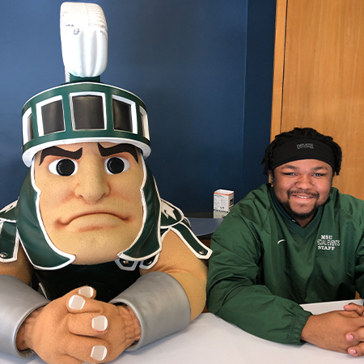

About Me

At the age of 12, I built my first computer with a little assistance from my pops. During middle school, my pops would kinda force me to participate in an engineering workshop with my brother after school. Everyday after school, I would get picked up and go straight to the workshop, for like 5 hours, and work on building robots. Eventually, I started enjoying robotics and ended up the lead CAD Designer during my sophmore year of highschool. During that period, I partnered with one of the engineer(s) that developed the remote start feature for GM vehicles. Even though I was groomed into becoming an engineer, I find myself in a major filled with cameras and actors.
My name is Malyk Sauls and I'm from Detroit, Michigan. I'm a graduating senior at Michigan State University, majoring in Media and Information (with a concentration in Film Production) and a minor in Informaion Technology. Originally, I was majoring in Computer Science but that field requires a level of self determination that I don't possess. Personally, I enjoyed coding but the requirements of the class was draining. The professors in Media and Information actually have personalities and the class environment are fun and productive.